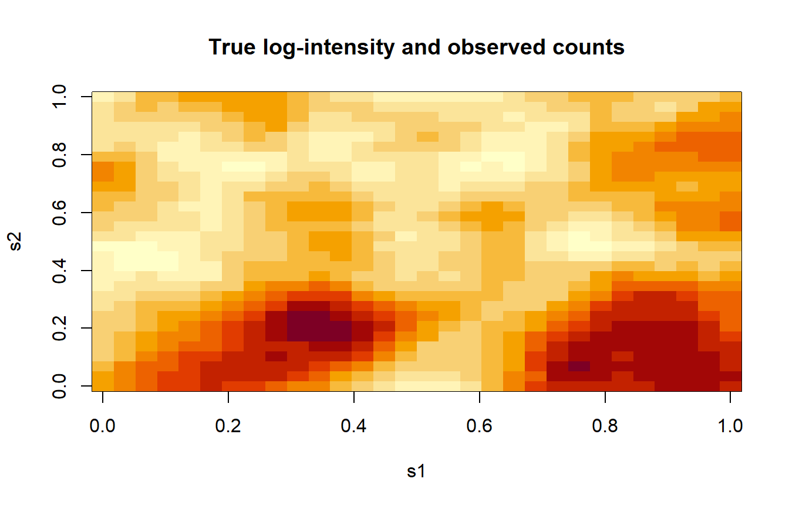
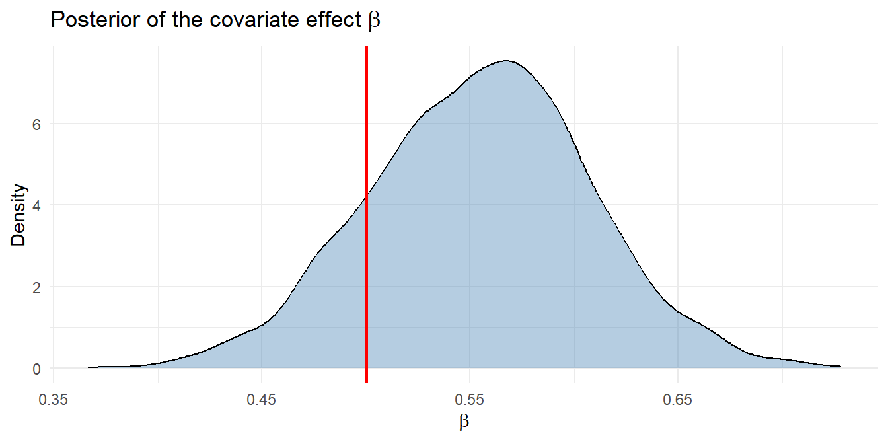
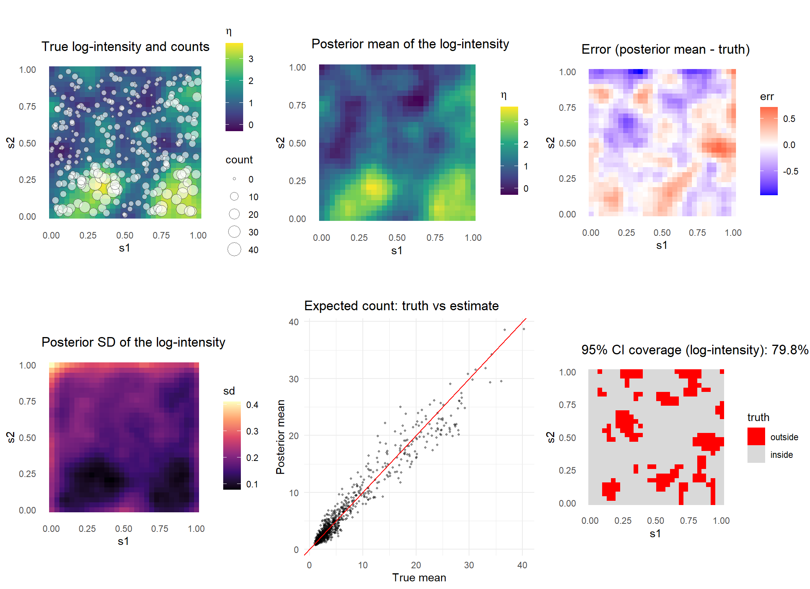
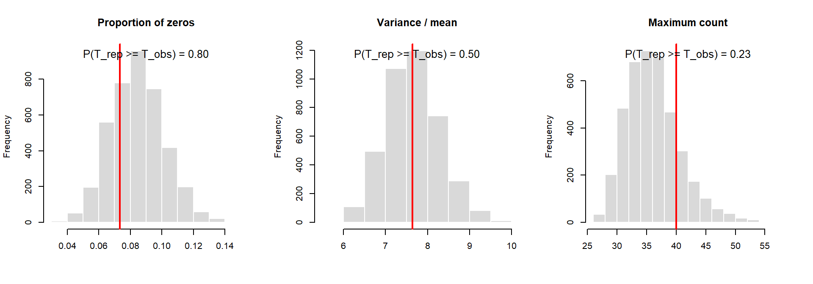

library(pacman)
pacman::p_load(tidyverse, dplyr, parallel, ggplot2, mgcv, rstan, gridExtra)1 Poisson likelihood with one numeric covariate
In this tutorial we will reuses regTPS_s() presented in PART 1. The basis, the penalty eigendecomposition, the truncation rule and the non-centered prior on the field are unchanged. Only the likelihood and the linear predictor change.
1.1 Model
Let \(y_i \in \{0, 1, 2, \dots\}\) be a count observed at site \(\mathbf{s}_i\), with a numeric covariate \(x_i\). Write \(\mu_i\) for the Poisson mean (we avoid \(\lambda\), which already denotes the KLE variances):
\[y_i \mid \mu_i \sim \text{Poisson}(\mu_i), \qquad \log \mu_i = \eta_i = \beta_0 + \beta\, x_i + u(\mathbf{s}_i), \qquad u(\mathbf{s}) = \boldsymbol\Phi(\mathbf{s})^\top \mathbf{z},\]
with the same prior on the coefficients as before, in non-centered form,
\[z_k = \frac{\tilde z_k}{\sqrt{1 + \alpha v_k}} \ (k > d_{\text{null}}), \qquad z_k = \tilde z_k \ (k \le d_{\text{null}}), \qquad \tilde z_k \overset{\text{iid}}{\sim} \mathcal{N}(0,1).\]
The hyperpriors are
\[\log\alpha \sim \mathcal{N}(0, \sigma_\alpha^2), \qquad \beta_0 \sim \mathcal{N}(0, \sigma_{\beta_0}^2), \qquad \beta \sim \mathcal{N}(0, \sigma_\beta^2).\]
The posterior is
\[p(\tilde{\mathbf{z}}, \alpha, \beta_0, \beta \mid \mathbf{y}) \propto \left[\prod_{i=1}^{N} \text{Poisson}\big(y_i \mid e^{\eta_i}\big)\right] \prod_{k=1}^{M}\mathcal{N}(\tilde z_k \mid 0, 1)\ \pi(\alpha)\,\pi(\beta_0)\,\pi(\beta).\]
If the covariate is standardized, \(e^{\beta}\) is the multiplicative change in the expected count for a one-standard-deviation increase in \(x\), holding the spatial field fixed.
1.1.1 What changes relative to the Gaussian model
| Aspect | Gaussian model | Poisson model |
|---|---|---|
| Likelihood | \(\mathcal{N}(\boldsymbol\Phi\mathbf{z}, \sigma_\varepsilon^2)\) | \(\text{Poisson}(\exp(\eta))\) |
| Noise parameter | \(\sigma_\varepsilon\) (PC prior) | none: the variance equals the mean |
| Field enters through | the mean directly | the log link, \(\eta = \beta_0 + \beta x + u\) |
| Hyperparameters | \(\alpha\), \(\sigma_\varepsilon\) | \(\alpha\) (plus the regression coefficients) |
| Conditional posterior of \(\tilde{\mathbf z}\) | exactly Gaussian | not Gaussian, which is fine because HMC samples it directly |
Two modelling points matter here.
- An explicit intercept. In the Gaussian tutorial the constant lives in the null space and needs no separate mean. With a log link the level of \(\eta\) matters, and a \(\mathcal{N}(0,1)\) prior on the null-space coefficients can be too tight for log-rates far from zero. We therefore add \(\beta_0\) with a wider prior. The constant mode and \(\beta_0\) are then only identified through their sum, with the split decided by the priors. The surface \(\eta\) is unaffected, but \(\beta_0\) should not be interpreted on its own.
- No free amplitude parameter. Since \(\lambda_{k,\alpha} \le 1\), the marginal variance of the latent field is not a hyperparameter. This was harmless in the Gaussian case, where \(\sigma_\varepsilon\) absorbs scale. For counts it limits how much the log-intensity can vary. The simulation below keeps the field amplitude moderate. If your real log-intensity varies a lot, an amplitude parameter would be needed, which goes beyond the model in the paper.
1.2 The regTPS function
regTPS_s() function:
regTPS_s <- function(sp_points, grid_total, y_obs, k_basis,
variance_threshold = 0.95, alpha_ref = 1,
verbose = TRUE) {
#====================================
# Basis and penalty (no centering constraint, so the null space is kept)
#====================================
data_smooth <- data.frame(s1 = sp_points$s1, s2 = sp_points$s2, y_obs = y_obs)
sm <- mgcv::smoothCon(s(s1, s2, k = k_basis, bs = "tp"),
data = data_smooth, absorb.cons = FALSE)[[1]]
Phi_basis_sp <- PredictMat(sm, data_smooth)
Phi_basis_grid <- PredictMat(sm, grid_total)
S <- sm$S[[1]]
#====================================
# Eigendecomposition (S psi = v psi), cleaned and ordered ascending
#====================================
S_eig <- eigen(S, symmetric = TRUE)
S_diag <- S_eig$values
evectors <- S_eig$vectors
S_diag[abs(S_diag) < 1e-12] <- 0
if (any(S_diag < -1e-10))
warning("Negative eigenvalues detected (max magnitude: ",
max(abs(S_diag[S_diag < 0])), ")")
S_diag[S_diag < 0] <- 0
order_idx <- order(S_diag, decreasing = FALSE)
S_diag <- S_diag[order_idx]
evectors <- evectors[, order_idx]
M_P_null_space <- sm$null.space.dim
#====================================
# Variance-based truncation
#====================================
nonzero_eigs <- S_diag[S_diag > 1e-10]
if (length(nonzero_eigs) == 0) stop("No non-zero eigenvalues found.")
# reference alpha, rescaled so that the rule does not depend on the scale of S
alpha_ref_scaled <- alpha_ref / median(nonzero_eigs)
lambda_k <- 1 / (1 + alpha_ref_scaled * S_diag)
lambda_k[1:M_P_null_space] <- 1 # null space: unit variance
total_variance <- sum(lambda_k)
cumvar <- cumsum(lambda_k) / total_variance
M_truncation <- which(cumvar >= variance_threshold)[1]
if (is.na(M_truncation)) M_truncation <- length(S_diag)
M_truncation <- max(M_truncation, M_P_null_space + 5)
if (M_truncation < M_P_null_space) M_truncation <- M_P_null_space
var_explained <- sum(lambda_k[1:M_truncation]) / total_variance
if (verbose) {
cat("Null space dim:", M_P_null_space, "| basis:", length(S_diag),
"| non-zero eig:", sum(S_diag > 1e-10), "\n")
cat("alpha_ref scaled:", round(alpha_ref_scaled, 6),
"| M_truncation:", M_truncation,
"| variance explained:", round(100 * var_explained, 2), "%\n")
}
#====================================
# Truncated matrices
#====================================
idx <- 1:M_truncation
Phi_kle_sp <- Phi_basis_sp %*% evectors[, idx]
Phi_kle_grid <- Phi_basis_grid %*% evectors[, idx]
S_diag_truncated <- S_diag[idx]
list(Phi_kle_sp = Phi_kle_sp,
Phi_kle_grid = Phi_kle_grid,
S_diag_truncated = S_diag_truncated,
M_truncation = M_truncation,
M_P_null_space = M_P_null_space,
alpha_ref_scaled = alpha_ref_scaled,
variance_explained = var_explained,
k_basis = k_basis,
S_diag_full = S_diag,
lambda_k = lambda_k,
cumvar = cumvar,
evectors = evectors,
sm = sm)
}2 Stan model
// regTPS spatial Poisson regression (non-centered parameterization)
data {
int<lower=1> N; // number of observations
int<lower=1> N_grid; // number of prediction grid points
int<lower=1> M; // M_truncation
int<lower=0, upper=M> M0; // null-space dimension
array[N] int<lower=0> y; // counts
vector[N] x; // covariate at observed sites
vector[N_grid] x_grid; // covariate at prediction grid
matrix[N, M] Phi_kle_sp; // KLE design at observed sites
matrix[N_grid, M] Phi_kle_grid; // KLE design at prediction grid
vector[M] S_diag_truncated; // penalty eigenvalues v_k
real<lower=0> sigma_logalpha; // prior sd of log(alpha)
real<lower=0> sigma_beta0; // prior sd of the intercept
real<lower=0> sigma_beta; // prior sd of the slope
}
parameters {
vector[M] z_tilde; // whitened coefficients
real logalpha;
real beta0;
real beta;
}
transformed parameters {
real alpha = exp(logalpha);
vector[M] scale; // sqrt(lambda_k)
vector[M] z;
vector[N] field_sp;
vector[N] eta;
for (k in 1:M) {
if (k <= M0) {
scale[k] = 1.0; // null space unpenalized
} else {
scale[k] = 1.0 / sqrt(1.0 + alpha * S_diag_truncated[k] + 1e-10);
}
}
z = scale .* z_tilde;
field_sp = Phi_kle_sp * z;
eta = beta0 + beta * x + field_sp;
}
model {
// priors
logalpha ~ normal(0, sigma_logalpha);
beta0 ~ normal(0, sigma_beta0);
beta ~ normal(0, sigma_beta);
z_tilde ~ std_normal();
// likelihood
y ~ poisson_log(eta);
}
generated quantities {
vector[N_grid] field_grid = Phi_kle_grid * z;
vector[N_grid] eta_grid = beta0 + beta * x_grid + field_grid;
vector[N_grid] mu_grid = exp(eta_grid);
array[N] int y_sim;
vector[N] log_lik;
for (i in 1:N) {
y_sim[i] = poisson_log_rng(eta[i]);
log_lik[i] = poisson_log_lpmf(y[i] | eta[i]);
}
}Points worth noting:
- The array syntax
array[N] intneeds a reasonably recentrstan(2.26 or later). - There is no
sigma_e, so the model has no free dispersion. The posterior predictive check below tells you whether that is adequate. poisson_log_rngfails ifetaexceeds about 20. This does not happen for sensible fits, but it can occur early in warmup with bad initial values, which is why the initial values below start at the empirical log-mean.- For rates per exposure (population at risk, area, time), add
+ log(E)toetawithEsupplied as data.
3 Simulation study
3.1 Simulating a numeric covariate, a latent field and counts
The covariate is a standardized spatial field with its own range, so it is spatially structured but independent of the latent field \(u\). We also simulate it on the prediction grid, as one would with a raster covariate. The true parameters are \(\beta_0 = 1.5\) and \(\beta = 0.5\).
set.seed(2026)
# Settings
n_obs <- 300
n_grid_pred <- 30
beta0_true <- 1.5
beta1_true <- 0.5 # per one-SD increase of x
sigma_u <- 0.7 # sd of the latent field (moderate amplitude, see notes)
range_u <- 0.25
range_x <- 0.15
# Locations
sp_points <- data.frame(s1 = runif(n_obs), s2 = runif(n_obs))
g <- seq(0, 1, length.out = n_grid_pred)
grid_total <- expand.grid(s1 = g, s2 = g)
all_pts <- rbind(sp_points, grid_total)
n_sp <- nrow(sp_points)
n_grid <- nrow(grid_total)
D <- as.matrix(dist(all_pts))
matern32 <- function(d, sigma, rho) {
h <- sqrt(3) * d / rho
sigma^2 * (1 + h) * exp(-h)
}
draw_gp <- function(Cov) {
L <- chol(Cov + diag(1e-8, nrow(Cov)))
as.vector(t(L) %*% rnorm(nrow(Cov)))
}
# Latent field and covariate, jointly at observed sites and grid
u_all <- draw_gp(matern32(D, sigma_u, range_u))
x_all <- as.vector(scale(draw_gp(matern32(D, 1, range_x))))
u_true_sp <- u_all[1:n_sp]
u_true_grid <- u_all[(n_sp + 1):(n_sp + n_grid)]
x_sp <- x_all[1:n_sp]
x_grid <- x_all[(n_sp + 1):(n_sp + n_grid)]
# True log-intensity and counts
eta_true_sp <- beta0_true + beta1_true * x_sp + u_true_sp
eta_true_grid <- beta0_true + beta1_true * x_grid + u_true_grid
y <- rpois(n_sp, exp(eta_true_sp))
summary(y) Min. 1st Qu. Median Mean 3rd Qu. Max.
0.00 2.00 3.00 5.88 7.00 40.00 cat("Proportion of zeros:", round(mean(y == 0), 3), "\n")Proportion of zeros: 0.073 image(g, g, matrix(eta_true_grid, n_grid_pred, n_grid_pred),
xlab = "s1", ylab = "s2", main = "True log-intensity and observed counts")
3.2 Build the regTPS basis
The response is only used inside regTPS_s() to build a data frame for mgcv. It does not affect the basis, so passing the counts is harmless. We use \(K = 100\) basis functions (below the 300 distinct sites) and keep 95% of the KLE variance.
reg <- regTPS_s(sp_points, grid_total, y_obs = y, k_basis = 100,
variance_threshold = 0.95, alpha_ref = 1)Null space dim: 3 | basis: 100 | non-zero eig: 97
alpha_ref scaled: 0.000627 | M_truncation: 83 | variance explained: 95.04 %4 Bayesian inference with Stan
4.1 Data and initial values
The covariate is already standardized, so \(\beta \sim \mathcal{N}(0, 1)\) is weakly informative: it allows rate ratios between roughly 0.14 and 7 within two standard deviations. The intercept prior is wider, and \(\sigma_\alpha\) is exposed as a data input, as before.
stan_dat_pois <- list(N = length(y),
N_grid = nrow(reg$Phi_kle_grid),
M = reg$M_truncation,
M0 = reg$M_P_null_space,
y = as.integer(y),
x = x_sp,
x_grid = x_grid,
Phi_kle_sp = unname(as.matrix(reg$Phi_kle_sp)),
Phi_kle_grid = unname(as.matrix(reg$Phi_kle_grid)),
S_diag_truncated = as.vector(reg$S_diag_truncated),
sigma_logalpha = 1.0,
sigma_beta0 = 2.0,
sigma_beta = 1.0)
logalpha_init <- max(min(log(reg$alpha_ref_scaled), 3), -3)
stan_init_pois <- function(chain_id) {
list(z_tilde = as.array(rep(0, reg$M_truncation)),
logalpha = logalpha_init,
beta0 = log(mean(y) + 0.5), # empirical log-mean, avoids huge eta early on
beta = 0)
}4.2 Sampling
fit_file <- "regTPS_pois_fit.rds"
if (file.exists(fit_file)) {
stan_fit_pois <- readRDS(fit_file)
} else {
stan_fit_pois <- sampling(regTPS_pois_mod,
data = stan_dat_pois,
init = stan_init_pois,
chains = 4,
iter = 2000,
warmup = 1000,
seed = 123,
control = list(max_treedepth = 12, adapt_delta = 0.9),
cores = no_cores,
refresh = 0)
saveRDS(stan_fit_pois, fit_file)
}4.3 Convergence and regression coefficients
print(stan_fit_pois, pars = c("alpha", "beta0", "beta"), probs = c(0.025, 0.5, 0.975))Inference for Stan model: anon_model.
4 chains, each with iter=2000; warmup=1000; thin=1;
post-warmup draws per chain=1000, total post-warmup draws=4000.
mean se_mean sd 2.5% 50% 97.5% n_eff Rhat
alpha 1.29 0.01 0.45 0.64 1.22 2.37 1611 1
beta0 1.01 0.02 0.94 -0.81 1.01 2.90 3912 1
beta 0.55 0.00 0.05 0.45 0.56 0.66 2771 1
Samples were drawn using NUTS(diag_e) at Mon Nov 9 15:40:56 2026.
For each parameter, n_eff is a crude measure of effective sample size,
and Rhat is the potential scale reduction factor on split chains (at
convergence, Rhat=1).rstan::check_hmc_diagnostics(stan_fit_pois)
Divergences:0 of 4000 iterations ended with a divergence.
Tree depth:0 of 4000 iterations saturated the maximum tree depth of 10.
Energy:E-BFMI indicated no pathological behavior.The true slope is 0.5. The next plot shows its posterior; the red line marks the truth.
post <- rstan::extract(stan_fit_pois)
ggplot(data.frame(beta = post$beta), aes(beta)) +
geom_density(fill = "steelblue", alpha = 0.4) +
geom_vline(xintercept = beta1_true, colour = "red", linewidth = 1) +
labs(title = expression("Posterior of the covariate effect"~beta),
x = expression(beta), y = "Density") +
theme_minimal()
4.3.1 Comparison with a non-spatial Poisson regression
A Poisson GLM ignores the latent field. If the spatial structure matters, the GLM slope will typically be less accurate and its interval too narrow, and the Pearson dispersion will exceed 1. Only the slope is compared, because the regTPS intercept is not identified separately from the null-space constant.
glm_fit <- glm(y ~ x_sp, family = poisson)
glm_ci <- confint.default(glm_fit)["x_sp", ]
data.frame(method = c("Truth", "Poisson GLM", "regTPS"),
slope = c(beta1_true, coef(glm_fit)["x_sp"], mean(post$beta)),
lower = c(NA, glm_ci[1], quantile(post$beta, 0.025)),
upper = c(NA, glm_ci[2], quantile(post$beta, 0.975)),
row.names = NULL) method slope lower upper
1 Truth 0.5000000 NA NA
2 Poisson GLM 0.5596463 0.5108736 0.6084190
3 regTPS 0.5546755 0.4473814 0.6590164cat("GLM Pearson dispersion:", round(sum(residuals(glm_fit, "pearson")^2) / glm_fit$df.residual, 2), "\n")GLM Pearson dispersion: 4.55 5 Results: true versus estimated log-intensity
5.1 Posterior summaries on the grid
We compare the full log-intensity \(\eta\), which includes the covariate effect, rather than the field \(u\) alone, because \(u\) is not separately identified from the intercept.
eta_draws <- post$eta_grid # draws x N_grid
mu_draws <- post$mu_grid
eta_mean <- colMeans(eta_draws)
eta_sd <- apply(eta_draws, 2, sd)
eta_lo <- apply(eta_draws, 2, quantile, 0.025)
eta_hi <- apply(eta_draws, 2, quantile, 0.975)
df <- data.frame(s1 = grid_total$s1, s2 = grid_total$s2,
eta_true = eta_true_grid, eta_mean = eta_mean, eta_sd = eta_sd,
err = eta_mean - eta_true_grid,
inside = eta_true_grid >= eta_lo & eta_true_grid <= eta_hi,
mu_true = exp(eta_true_grid), mu_mean = colMeans(mu_draws))
data.frame(RMSE_eta = sqrt(mean(df$err^2)),
MAE_eta = mean(abs(df$err)),
Correlation_eta = cor(df$eta_true, df$eta_mean),
RMSE_mu = sqrt(mean((df$mu_mean - df$mu_true)^2)),
Coverage95_eta = mean(df$inside)) RMSE_eta MAE_eta Correlation_eta RMSE_mu Coverage95_eta
1 0.2665837 0.2079358 0.955426 1.626744 0.79777785.2 Maps
lims <- range(c(df$eta_true, df$eta_mean))
fld_scale <- scale_fill_viridis_c(limits = lims, option = "D")
base_theme <- theme_minimal() + theme(panel.grid = element_blank())
obs_df <- data.frame(sp_points, y = y)
p_true <- ggplot(df, aes(s1, s2, fill = eta_true)) +
geom_raster() + fld_scale + coord_equal() +
geom_point(data = obs_df, aes(s1, s2, size = y), inherit.aes = FALSE,
shape = 21, fill = "white", alpha = 0.6) +
labs(title = "True log-intensity and counts", fill = expression(eta), size = "count") +
base_theme
p_est <- ggplot(df, aes(s1, s2, fill = eta_mean)) +
geom_raster() + fld_scale + coord_equal() +
labs(title = "Posterior mean of the log-intensity", fill = expression(eta)) + base_theme
p_err <- ggplot(df, aes(s1, s2, fill = err)) +
geom_raster() + coord_equal() +
scale_fill_gradient2(low = "blue", mid = "white", high = "red", midpoint = 0) +
labs(title = "Error (posterior mean - truth)", fill = "err") + base_theme
p_sd <- ggplot(df, aes(s1, s2, fill = eta_sd)) +
geom_raster() + coord_equal() +
scale_fill_viridis_c(option = "magma") +
labs(title = "Posterior SD of the log-intensity", fill = "sd") + base_theme
p_scatter <- ggplot(df, aes(mu_true, mu_mean)) +
geom_point(alpha = 0.4, size = 0.8) +
geom_abline(slope = 1, intercept = 0, colour = "red") +
labs(title = "Expected count: truth vs estimate", x = "True mean", y = "Posterior mean") +
theme_minimal()
p_cover <- ggplot(df, aes(s1, s2, fill = inside)) +
geom_raster() + coord_equal() +
scale_fill_manual(values = c("TRUE" = "grey85", "FALSE" = "red"),
labels = c("TRUE" = "inside", "FALSE" = "outside")) +
labs(title = sprintf("95%% CI coverage (log-intensity): %.1f%%", 100 * mean(df$inside)),
fill = "truth") + base_theme
grid.arrange(p_true, p_est, p_err, p_sd, p_scatter, p_cover, ncol = 3)
5.3 Posterior predictive checks for counts
For counts, a density overlay is less informative than summary statistics that probe the Poisson assumption. We compare the observed value (red line) with its distribution over the replicated data sets y_sim. The proportion of zeros and the maximum count check the tails. The variance-to-mean ratio checks overdispersion, which this model cannot capture because it has no free dispersion parameter.
y_sim <- post$y_sim
stat_fun <- list("Proportion of zeros" = function(v) mean(v == 0),
"Variance / mean" = function(v) var(v) / mean(v),
"Maximum count" = max)
par(mfrow = c(1, 3))
for (nm in names(stat_fun)) {
f <- stat_fun[[nm]]
rep_stat <- apply(y_sim, 1, f)
hist(rep_stat, main = nm, xlab = "", col = "grey85", border = "white")
abline(v = f(y), lwd = 2, col = "red")
mtext(sprintf("P(T_rep >= T_obs) = %.2f", mean(rep_stat >= f(y))),
side = 3, line = -1.5, cex = 0.8)
}
If the observed statistic sits far in the tail of its replicated distribution, especially the variance-to-mean ratio, the Poisson likelihood is too restrictive. A simple remedy is to replace poisson_log(eta) with neg_binomial_2_log(eta, phi) and give phi a prior, or to add an iid observation-level random effect.
6 Predicting at new locations without refitting
The linear predictor is again linear in the posterior draws of \(\mathbf{z}\), \(\beta_0\) and \(\beta\), so new sites only need a covariate value and the stored basis. The covariate must be known at the new sites.
new_pts <- data.frame(s1 = c(0.25, 0.5, 0.75), s2 = c(0.25, 0.5, 0.75))
x_new <- c(-0.5, 0, 1) # covariate values at the new sites
Phi_new <- PredictMat(reg$sm, new_pts) %*% reg$evectors[, 1:reg$M_truncation]
eta_new <- sweep(post$z %*% t(Phi_new), 1, post$beta0, "+") +
outer(post$beta, x_new) # draws x n_new
mu_new <- exp(eta_new)
data.frame(new_pts, x = x_new,
mean = colMeans(mu_new),
lo = apply(mu_new, 2, quantile, 0.025),
hi = apply(mu_new, 2, quantile, 0.975)) s1 s2 x mean lo hi
1 0.25 0.25 -0.5 6.269502 4.936847 7.891006
2 0.50 0.50 0.0 3.841903 2.682266 5.268652
3 0.75 0.75 1.0 6.724288 4.618876 9.309930This interval is for the expected count. For an interval on a new observed count, also draw rpois(length(mu_new), mu_new) and summarize those draws.
7 Notes
- Spatial confounding. The covariate here is spatially smooth, and the null space contains linear trends in \(s_1\) and \(s_2\). When \(x\) is smooth, \(\beta\) competes with the low-frequency modes of the field, and the prior on the field, not the data, decides how the shared signal is split. Expect the posterior of \(\beta\) to be wider than the GLM interval, which is the honest outcome, and check how sensitive it is to \(\sigma_\alpha\) and to the truncation level.
- Truncation. The rule that chooses \(M\) uses only the prior variances at a fixed reference \(\alpha\), so it does not depend on the likelihood and is identical to the Gaussian case.
- Why non-centering matters more here. A single Poisson count carries much less information about the latent field than a Gaussian observation with a small noise variance. The posterior of \(\tilde{\mathbf z}\) is therefore wider and closer to its prior, which is the regime where the non-centered parameterization works best.
- Prior on \(\log\alpha\). The code uses \(\sigma_\alpha = 1\), as in the earlier sections of this tutorial, and exposes it as data. The paper reports \(\sigma_\alpha = 3\), so state which value you use and consider a short sensitivity check.
- Amplitude of the field. As noted above, the model has no marginal-variance parameter. If posterior predictive checks or the maps suggest that the field is over-smoothed or that extreme intensities are under-estimated, an amplitude parameter (for example \(z_k = \sigma_u \sqrt{\lambda_{k,\alpha}}\,\tilde z_k\)) is the first extension to try, but it changes the model from the one in the paper.